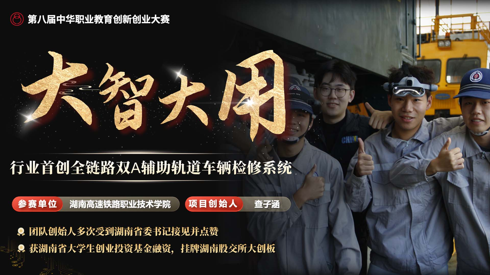

湖南高速铁路职业技术学院-创新竞赛-大智大用
2026-08-28

围绕大智大用竞赛展示需求，系统优化教学设计、课堂表达、视觉呈现与数字化支撑材料。
本案例围绕“湖南高速铁路职业技术学院-创新竞赛-大智大用”开展教学竞赛内容支持与数字化呈现。项目从课程目标、教学重点难点、课堂实施逻辑和创新亮点出发，对参赛材料进行结构化梳理，并结合课程特点优化说课表达、PPT视觉、课堂实录及配套数字资源。制作过程强调教学设计、实施过程与成果证据之间的逻辑一致性，在不改变课程专业内核的基础上提升信息表达效率与展示完整度。